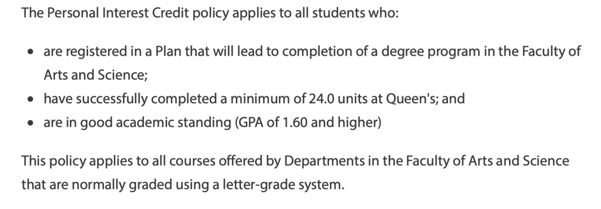
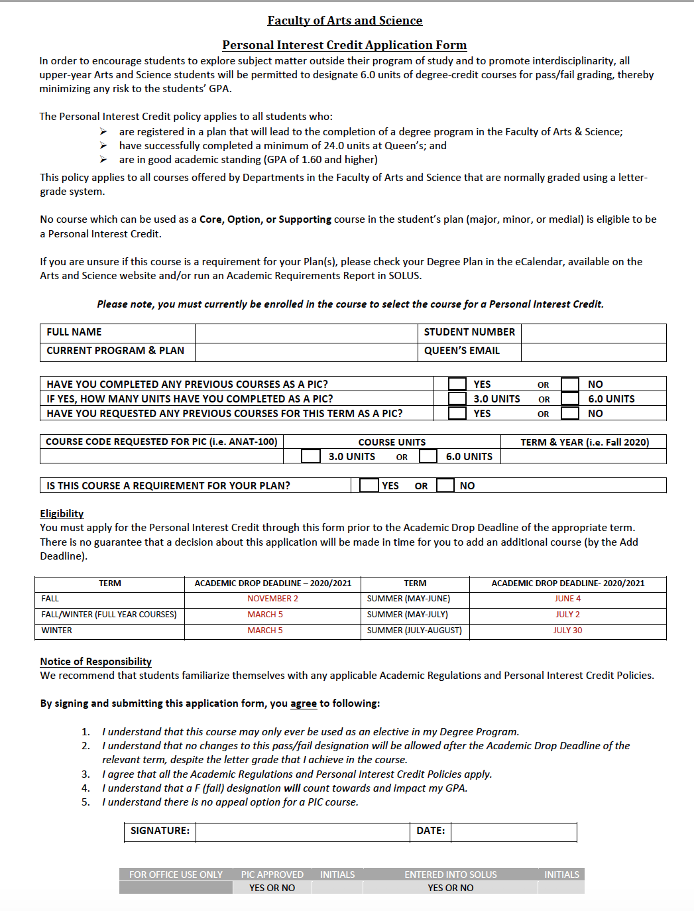
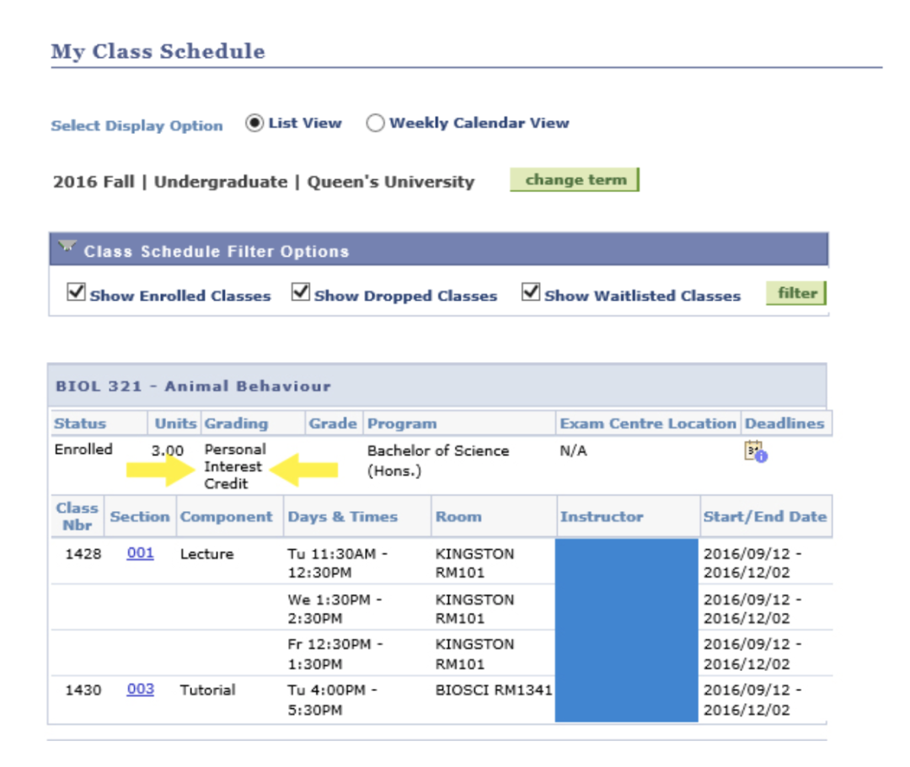
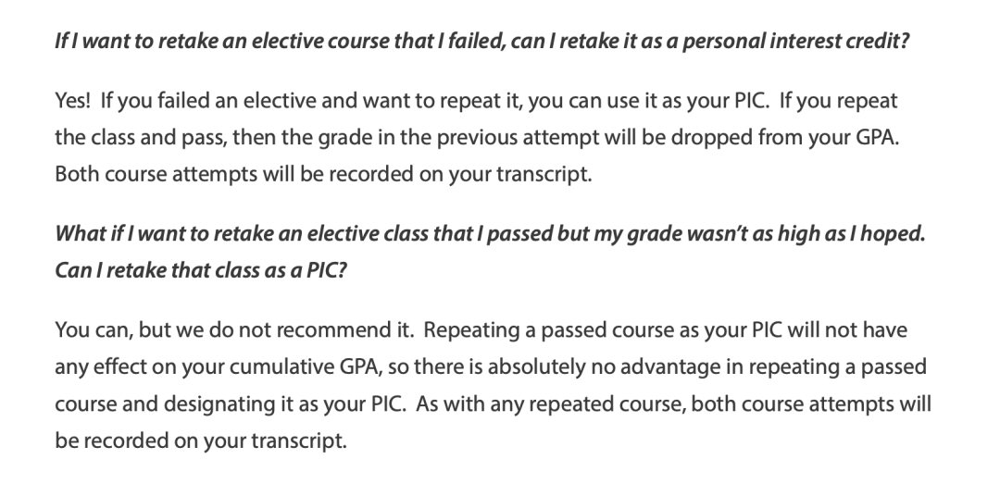
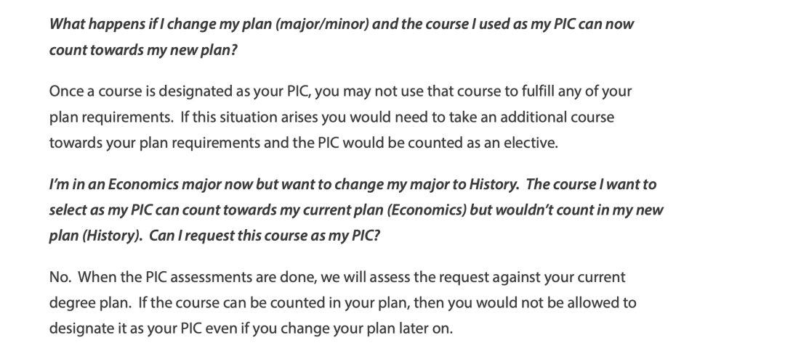
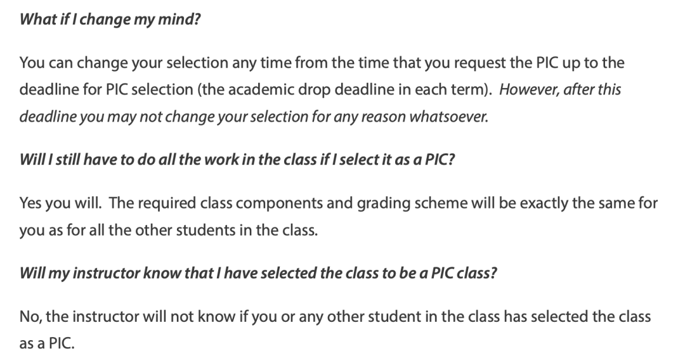

PIC 申请指南
每年开学前，在自己的专业课选课已经选完的时候，同学们大多会在选择什么选修课上绞尽脑汁。有人会选择一门水课来拯救自己的GPA，但是由于教授的更换，大纲的变化，屠龙少年最终变成恶龙，水课成为了杀手课……
“所以，水课会消失，对不对？”
也有人会选择一些使用的课作为选修课，但是学着学着发现，这么课和自己想象中的不大一样，这类选修课可能会大量占用你的学习时间，甚至会抢了你学专业课的时间。更绝望的是，现在已经过了可以换课的时间，所以我们只能在drop后没法添加新课，本学期少了3个学分和继续让这门课拖垮GPA之间抉择吗？
其实，我们还有第三种选择！兴趣课PIC（Personal Interest Credits）是学校提供给学生的可以将非专业相关课程在通过后只在成绩单上显示Pass的机会。也就是说如果将一门课选为PIC课程之后，如果这门课最后顺利通过可以获得相对应的学分，只不过这门课的成绩可以不在成绩单上显示。
那么选择PIC课程有什么条件呢？
从下图可以看出，选择PIC的条件要求有三项，后两项要求在申请PIC课程时必须已经学满24个学分，并且GPA达到1.6，这两项要求意味着大一的新生暂时还不能选择PIC课程。此外学校提醒在申请研究生项目时，有些项目不承认PIC学分，因此选择PIC学分要谨慎！！！
申请条件

对于课程方面PIC课程有什么限制呢？
- 每学期最多选择一门PIC课，大学期间最多6个学分的PIC课程
- PIC课程不能在你的degree plan里，包括 core, option or supporting（尽管你不想用这门课作为option，但是一旦这门课被写在degree plan中，就不能申请这门课的PIC）
时间要求：
必须在deadline to drop a class without academic penalty 之前完成申请。
今年是11月2日！！！！
如何申请
申请表样表

查看申请是否被批准
办公室会在收到申请的24-48小时通知你最终的结果。之后可以去solus上自行查看。

SOLUS
常见问题



文字 Nathan
排版 Nathan
编辑 容易
审核 唐韬 Chris